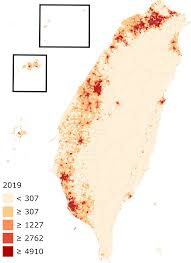
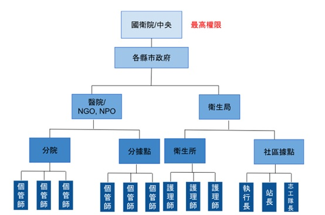

總覽 (Dashboard)
歡迎使用「隨身AI智能小管家」後台
這是一個互動式 Demo，旨在展示第二期計畫的核心後台功能。
請點擊左側導覽列來查看基於國衛院需求及專案規劃書所模擬的介面。
活躍會員數 (本日)
1,280
+5% vs 昨日
AI 互動次數 (本日)
8,450
+12% vs 昨日
主動關懷觸發
320
(目標: 每週/每位 > 3次)
系統狀態
AI 核心 (Azure OpenAI): 運作正常
語音服務 (長問 / Microsoft): 運作正常
異常: 語音回覆與文字不符 - 正在處理
AI 工作流 (Workflow)
定義 AI 的核心邏輯，串接知識庫、模型與工具。
工作流: 交通查詢
觸發意圖: 詢問 (交通, "怎麼去", "車票")
流程:
- AI: "您想去哪裡？" (反問確認)
- User: "[目的地]"
- AI: "您想從哪裡出發？" (反問確認)
- User: "[出發地]"
- AI: (呼叫 [台鐵/高鐵 API] 工具) -> (檢索 [個人化偏好] 知識庫) -> "為您查詢到..."
工作流: 主動式關懷
觸發條件: 每日排程
流程:
- (呼叫 [檢查血壓] 工具) -> "檢查 [三天未量測] 且 [高血壓] 的使用者"
- (呼叫 [Line 推播] 工具) -> "發送關懷訊息"
知識庫 (Knowledge Base)
國衛院管理員可在此處自主上傳、更新或移除 AI 的知識來源。
| 檔案名稱 | 文件分類標籤 | 狀態 | 操作 |
|---|---|---|---|
| 2025年長照福利懶人包.pdf | 長照與社會福利 | 已索引 | |
| 高血壓衛教手冊.docx | 醫療健康與保健 | 已索引 |
工具 (Tools)
建立可供 AI 工作流呼叫的自定義功能或 API。
| 工具名稱 | 說明 | 狀態 |
|---|---|---|
| Line 推播工具 | 用於發送 Line Message API | 已連接 |
| 檢查血壓工具 | 查詢會員資料庫的血壓紀錄 | 已連接 |
| 台鐵時刻表 API | 查詢即時台鐵班次 | 延遲 |
AI 應答紀錄
檢視使用者與 AI 之間的完整對話紀錄。
| 時間 | 使用者 | 使用者問題 | AI 回應 |
|---|---|---|---|
| 2025-11-13 08:10:05 | 陳伯伯 (M-00001) | 管我今天早上頭有點暈暈的 | 「陳伯伯，我先提醒您量一下血壓。記錄下來我幫您存檔。您今天早上吃了降血壓藥了嗎？」 |
| 2025-11-12 14:30:20 | 林阿姨 (M-00002) | 我下禮拜想去桃園看我孫子，怎麼去比較好？ | 「林阿姨，去桃園可以搭台鐵... 考慮到您的膝蓋，我建議選擇...」 |
| 2025-11-11 21:05:00 | 李先生 (M-00003) | 最近睡不著 | 「李先生，您上週說睡眠品質不好，我找到一個針對長者的睡前舒眠音樂，現在播放給您聽好嗎？」 |
會員資料屬性及使用情形分析
依據國衛院需求，將會員資料以視覺化圖表呈現。國衛院可自行增加調查之屬性欄位。
會員年齡及性別分布 (群組長條圖)
原住民各族身份佔比 (圓餅圖)
(阿美族 37.3%, 排灣族 18.1%, ...)
民眾常問前十關鍵詞 (文字雲圖)
血壓 頭暈 長照
天氣 補助 睡不著
會員區域分布 (台灣地圖熱區圖)

會員列表
| 會員ID | 姓名 | 年齡 | 性別 | 註冊日期 | 操作 |
|---|---|---|---|---|---|
| M-00001 | 陳伯伯 | 72 | 男 | 2025-01-15 | |
| M-00002 | 林阿姨 | 68 | 女 | 2025-02-03 | |
| M-00003 | 李先生 | 65 | 男 | 2025-03-20 |
最新消息資料來源 (URL)
設定AI爬取即時資訊的來源網址，作為知識庫的補充。
| 資料來源 | 網址 (URL) | 狀態 |
|---|---|---|
| 中央氣象局 | https://www.cwa.gov.tw/V8/C/ | 定時爬取 |
| 疾管署 | https://www.cdc.gov.tw/ | 定時爬取 |
| 衛福部長照專區 | https://www.sfaa.gov.tw/SFAA/default.aspx | 定時爬取 |
可串接的API及用途說明
管理與監控所有對外的 API 串接，確保數據交換的穩定與安全。
| API 名稱 | 類型 | 狀態 | 說明 | 操作 |
|---|---|---|---|---|
| 雲林幣扭一下 (獎勵機制) | 異質系統整合 | 運作正常 | 與雲林縣政府試辦串接 | |
| 台鐵時刻表 API | 政府開放資料 | 延遲 | 即時交通資訊 | |
| 新北幣 / 台東金幣 API | 異質系統整合 | 未串接 | 規劃中，逐步導入 |
政府111簡訊API設定 (國衛院)
設定由數位發展部提供的政府專屬簡訊平台 API 金鑰。
Line 訊息推播 (Broadcast)
編輯並發送訊息給指定的 Line 好友。
訊息內容編輯
發送設定
Line 圖文選單 (Rich Menu) 管理
管理 Line 聊天室下方的常駐選單。
選單預覽與設定
管理員列表 (分層管理)
依據不同層級，管理員擁有不同的資料查看權限與功能操作權限。
| 帳號 | 姓名 | 角色 / 層級 | 所屬單位 | 操作 |
|---|---|---|---|---|
| richard.yang@nhri.org.tw | Richard Yang | 國衛院/中央 (最高權限) | 國家衛生研究院 | |
| yunlin.gov@yunlin.tw | 王 O O | 縣市政府 | 雲林縣政府 衛生局 | |
| nurse.lee@femh.org.tw | 李 O O | 醫院 / 個管師 | 亞東醫院 |
後台管理系統分級 (架構)
後台權限管理資料依照管理者層級不同進行分階授權，授權項目由國衛院設定。
權限設定 (角色範例)
| 角色 (Role) | 功能權限 (摘要) | 資料權限 (摘要) | 操作 |
|---|---|---|---|
| 國衛院/中央 | 所有功能 | 所有資料 | |
| 縣市政府 | 查看儀表板, 管理轄下單位 | 僅限該縣市資料 | |
| 醫院/NGO | 查看儀表板, 管理個案 | 僅限所屬會員資料 | |
| 個管師 / 社區據點 | 查看個案資料 | 僅限被分配之個案資料 |
編輯會員資料: 陳伯伯
編輯管理員權限: 王 O O
設定角色權限: 個管師 / 社區據點